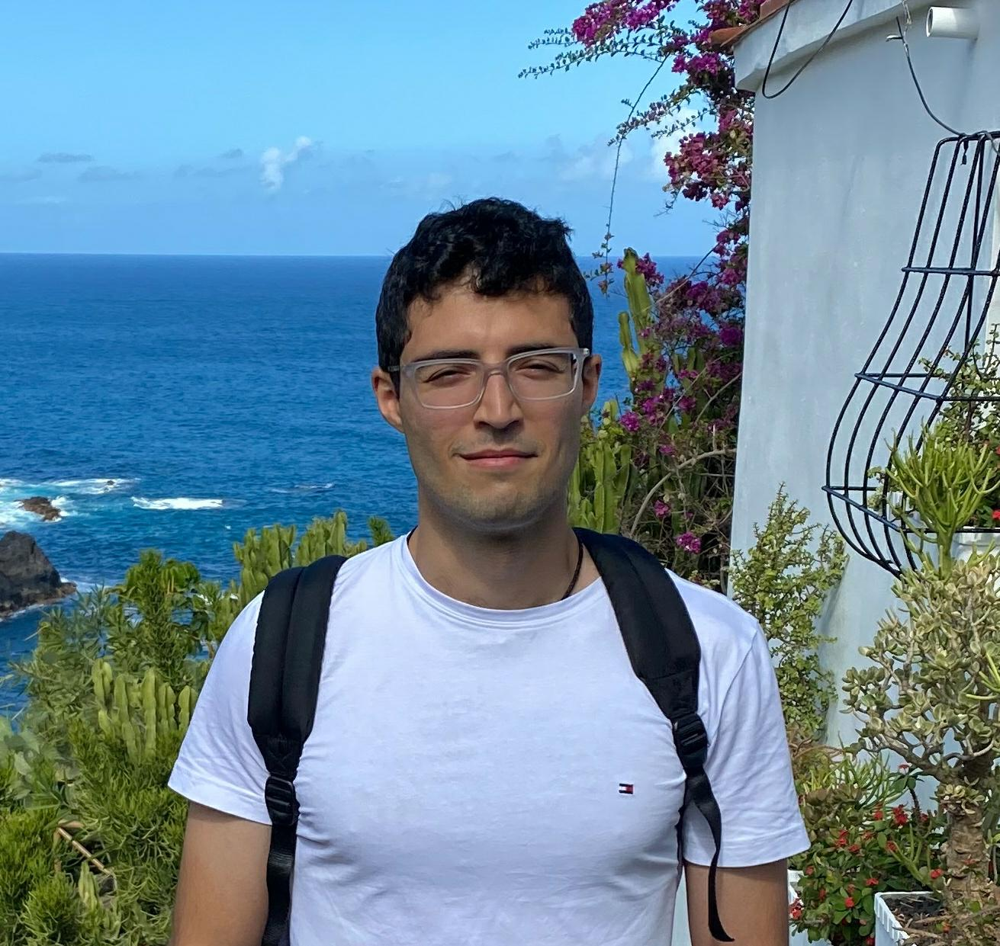

Daniel Layeghi
My work has moved between robotics, research in control and learning, and starting a product company. Most recently, I co-founded Z2 Labs because I wanted serious engineering and careful product design to sit together. Its first product, Souida, is a natural-language book-discovery platform. I developed the high-performance machine-learning, retrieval and production systems behind it. I also worked on distribution and scoped technical projects for consulting clients.
Before Z2, I completed a PhD and postdoc at the University of Edinburgh and published in reinforcement learning, optimal control and robot manipulation. I am particularly interested in connecting model-based control with learning, including through differentiable simulation. My PhD thesis was Optimal Control Theoretic Value Function Learning.
Earlier, I joined Automata as an early employee and built its robotics stack from scratch. The software was later used in NHS pathology laboratories; Automata subsequently raised a $50M Series B.
Papers
-
Amortising Trajectory Optimisation for Residual MPC via Implicit Contact Differentiation. [RA-L submission · Code]
Daniel Layeghi, Thomas Corbères, Calum Arnott, Aditya Kamireddypalli, Hashim Al-Obaidi, Steve Tonneau, and Michael Mistry. -
Learning Long-Horizon Robot Manipulation Skills via Privileged Action. [CoRL 2025]
Xiaofeng Mao, Yucheng Xu, Zhaole Sun, Elle Miller, Daniel Layeghi, and Michael Mistry. -
Neural Lyapunov and Optimal Control. [arXiv · Code]
Daniel Layeghi, Steve Tonneau, and Michael Mistry. -
Optimal Control via Combined Inference and Numerical Optimization. [ICRA 2022 · Code]
Daniel Layeghi, Steve Tonneau, and Michael Mistry.